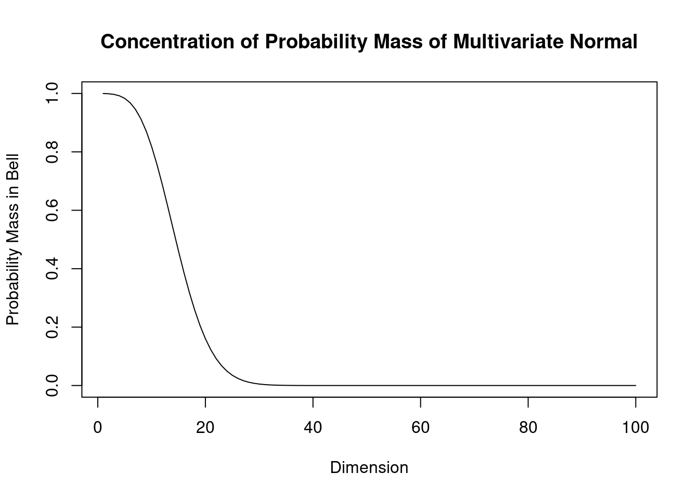

1 Multivariate random variables
1.1 Why multivariate statistics?
Science uses experiments to verify hypotheses about the world. Statistics provides tools to quantify this procedure and offers methods to link data (experiments) with probabilistic models (hypotheses). Since the world is complex we need complex models and complex data, hence the need for multivariate statistics and machine learning.
Specifically, multivariate statistics (as opposed to univariate statistics) is concerned with methods and models for random vectors and random matrices, rather than just random univariate (scalar) variables. Therefore, in multivariate statistics we will frequently make use of matrix notation.
Closely related to multivariate statistics (traditionally a subfield of statistics) is machine learning (ML) which is traditionally a subfield of computer science. ML used to focus more on algorithms rather on probabilistic modelling but nowadays most machine learning methods are fully based on statistical multivariate approaches, so the two fields are converging.
Multivariate models provide a means to learn dependencies and interactions among the components of the random variables which in turn allow us to draw conclusion about underlying mechanisms of interest (e.g. biological or medical).
Two main tasks:
- unsupervised learning (finding structure, clustering)
- supervised learning (training from labelled data, followed by prediction)
Challenges:
- complexity of model needs to be appropriate for problem and available data,
- high dimensions make estimation and inference difficult
- computational issues.
1.2 Essentials in multivariate statistics
1.2.1 Univariate vs. multivariate random variables
Univariate random variable (dimension \(d=1\)): \[x \sim F\] where \(x\) is a scalar and \(F\) is the distribution. \(\text{E}(x) = \mu\) denotes the mean and \(\text{Var}(x) = \sigma^2\) the variance of \(x\).
Multivariate random vector of dimension \(d\): \[\boldsymbol x= (x_1, x_2,...,x_d)^T \sim F\]
\(\boldsymbol x\) is vector valued random variable.
The vector \(\boldsymbol x\) is column vector (=matrix of size \(d \times 1\)). Its components \(x_1, x_2,...,x_d\) are univariate random variables. The dimension \(d\) is also often denoted by \(p\) or \(q\).
1.2.2 Mean of a random vector
The mean / expectation of a random vector with dimensions \(d\) is also a vector with dimensions \(d\): \[\text{E}(\boldsymbol x) = \boldsymbol \mu= \begin{pmatrix} \text{E}(x_1) \\ \text{E}(x_2) \\ \vdots \\ \text{E}(x_d) \end{pmatrix} = \left( \begin{array}{l} \mu_1 \\ \mu_2 \\ \vdots \\ \mu_d \end{array}\right)\]
1.2.3 Variance of a random vector
Recall the definition of mean and variance for a univariate random variable:
\[\text{E}(x) = \mu\]
\[\text{Var}(x) = \sigma^2 = \text{E}( (x-\mu)^2 )=\text{E}( (x-\mu)(x-\mu) ) = \text{E}(x^2)-\mu^2\]
Definition of variance of a random vector:
\[\text{Var}(\boldsymbol x) = \underbrace{\boldsymbol \Sigma}_{d\times d} = \text{E}\left(\underbrace{(\boldsymbol x-\boldsymbol \mu)}_{d\times 1} \underbrace{(\boldsymbol x-\boldsymbol \mu)^T}_{1\times d} \right) = \text{E}(\boldsymbol x\boldsymbol x^T)-\boldsymbol \mu\boldsymbol \mu^T\]
The variance of a random vector is, therefore, not a vector but a matrix!
\[\boldsymbol \Sigma= (\sigma_{ij}) = \begin{pmatrix} \sigma_{11} & \dots & \sigma_{1d}\\ \vdots & \ddots & \vdots \\ \sigma_{d1} & \dots & \sigma_{dd} \end{pmatrix}\]
This matrix is called the Covariance Matrix, with off-diagonal elements \(\sigma_{ij}= \text{Cov}(x_i,x_j)\) and the diagonal \(\sigma_{ii}= \text{Var}(X_i) = \sigma_i^2\).
1.2.4 Properties of the covariance matrix
- \(\boldsymbol \Sigma\) is real valued: \(\sigma_{ij} \in \mathbb{R}\)
- \(\boldsymbol \Sigma\) is symmetric: \(\sigma_{ij} = \sigma_{ji}\)
- The diagonal of \(\boldsymbol \Sigma\) contains \(\sigma_{ii} = \text{Var}(x_i) = \sigma_i^2\), i.e. the variances of the components of \(\boldsymbol x\).
- Off-diagonal elements \(\sigma_{ij} = \text{Cov}(x_i,x_j)\) represent linear dependencies among the \(x_i\). \(\Longrightarrow\) linear regression, correlation
How many separate entries does \(\boldsymbol \Sigma\) have?
\[\boldsymbol \Sigma= (\sigma_{ij}) = \underbrace{\begin{pmatrix} \sigma_{11} & \dots & \sigma_{1d}\\ \vdots & \ddots & \vdots \\ \sigma_{d1} & \dots & \sigma_{dd} \end{pmatrix}}_{d\times d}\] with \(\sigma_{ij} = \sigma_{ji}\).
Number of separate entries: \(\frac{d(d+1)}{2}\).
This numbers grows with the square of the dimension \(d\), i.e. is of order \(O(d^2)\):
| \(d\) | # entries |
|---|---|
| 1 | 1 |
| 10 | 55 |
| 100 | 5050 |
| 1000 | 500500 |
| 10000 | 50005000 |
For large dimension \(d\) the covariance matrix has many components!
–> computationally expensive (both for storage and in handling) –> very challenging to estimate in high dimensions \(d\).
Note: matrix inversion requires \(O(d^3)\) operations using standard algorithms such as Gauss Jordan elimination.1 Hence, computing \(\boldsymbol \Sigma^{-1}\) is computationally expensive for large \(d\)!
1.2.5 Eigenvalue decomposition of \(\boldsymbol \Sigma\)
Recall the orthogonal eigendecomposition from matrix analysis and linear algebra: A symmetric matrix with real entries has real eigenvalues and a complete set of orthogonal eigenvectors.
Applying eigenvalue decomposition to the covariance matrix yields \[ \boldsymbol \Sigma= \boldsymbol U\boldsymbol \Lambda\boldsymbol U^T \] where \(\boldsymbol U\) is an orthogonal matrix containing the eigenvectors and \[\boldsymbol \Lambda= \begin{pmatrix} \lambda_{1} & \dots & 0\\ \vdots & \ddots & \vdots \\ 0 & \dots & \lambda_{d} \end{pmatrix}\] contains the eigenvalues \(\lambda_i\).
Importantly, the eigenvalues of the covariance matrix are not only real valued but they are further constrained to be non-negative. This can be seen by computing the quadratic form \(\boldsymbol z^T \boldsymbol \Sigma\boldsymbol z\) for a non-zero non-random vector \(\boldsymbol z\) which yields \[ \begin{split} \boldsymbol z^T \boldsymbol \Sigma\boldsymbol z& = \boldsymbol z^T \text{E}\left( (\boldsymbol x-\boldsymbol \mu) (\boldsymbol x-\boldsymbol \mu)^T \right) \boldsymbol z\\ & = \text{E}\left( \boldsymbol z^T (\boldsymbol x-\boldsymbol \mu) (\boldsymbol x-\boldsymbol \mu)^T \boldsymbol z\right) \\ & = \text{E}\left( \left( \boldsymbol z^T (\boldsymbol x-\boldsymbol \mu) \right)^2 \right) \geq 0 \, .\\ \end{split} \] Therefore the covariance matrix \(\boldsymbol \Sigma\) is always positive semi-definite.
In fact, unless there is collinearity ( i.e. a variable is a linear function the other variables) all eigenvalues will be positive and \(\boldsymbol \Sigma\) is positive definite.
1.3 Multivariate normal distribution
The multivariate normal model is a generalisation of the univariate normal distribution from dimension 1 to dimension \(d\).
1.3.1 Univariate normal distribution:
\[\text{Dimension } d = 1\] \[x \sim N(\mu, \sigma^2)\] \[\text{E}(x) = \mu \space , \space \text{Var}(x) = \sigma^2\]
Density:
\[f(x |\mu, \sigma^2) = \frac{1}{\sqrt{2\pi\sigma^2}} \exp\left( -\frac{(x-\mu)^2}{2\sigma^2} \right) \]
Plot of univariate normal density :
Unimodal with peak at \(\mu\), width determined by \(\sigma\) (in this plot: \(\mu=2, \sigma^2=1\) )
Special case: standard normal with \(\mu=0\) and \(\sigma^2=1\):
\[f(x |\mu=0,\sigma^2=1)=\frac{1}{\sqrt{2\pi}} \exp\left( {-\frac{x^2}{2}} \right) \]
Differential entropy:
\[
H(F) = \frac{1}{2} (\log(2 \pi \sigma^2) + 1)
\]
Cross-entropy:
\[
H(F_{\text{ref}}, F) = \frac{1}{2} \left( \frac{(\mu - \mu_{\text{ref}})^2}{ \sigma^2 }
+\frac{\sigma^2_{\text{ref}}}{\sigma^2} +\log(2 \pi \sigma^2) \right)
\]
KL divergence:
\[
D_{\text{KL}}(F_{\text{ref}}, F) = H(F_{\text{ref}}, F) - H(F_{\text{ref}}) =
\frac{1}{2} \left( \frac{(\mu - \mu_{\text{ref}})^2}{ \sigma^2 }
+\frac{\sigma^2_{\text{ref}}}{\sigma^2} -\log\left(\frac{\sigma^2_{\text{ref}}}{ \sigma^2}\right) -1
\right)
\]
Maximum entropy characterisation: the normal distribution is the unique distribution that has the highest (differential) entropy over all continuous distributions with support from minus infinity to plus infinity with a given mean and variance.
This is in fact one of the reasons why the normal distribution is so important (und useful) – if we only know that a random variable has a mean and variance, and not much else, then using the normal distribution will be a reasonable and well justified working assumption!
1.3.2 Multivariate normal model
\[\text{Dimension } d\] \[\boldsymbol x\sim N_d(\boldsymbol \mu, \boldsymbol \Sigma)\] \[\boldsymbol x\sim \text{MVN}(\boldsymbol \mu,\boldsymbol \Sigma) \] \[\text{E}(\boldsymbol x) = \boldsymbol \mu\space , \space \text{Var}(\boldsymbol x) = \boldsymbol \Sigma\]
Density:
\[f(\boldsymbol x| \boldsymbol \mu, \boldsymbol \Sigma) = \det(2 \pi \boldsymbol \Sigma)^{-\frac{1}{2}} \exp\left({{-\frac{1}{2}} \underbrace{\underbrace{(\boldsymbol x-\boldsymbol \mu)^T}_{1 \times d} \underbrace{\boldsymbol \Sigma^{-1}}_{d \times d} \underbrace{(\boldsymbol x-\boldsymbol \mu)}_{d \times 1} }_{1 \times 1 = \text{scalar!}}}\right)\]
- note that density contains precision matrix \(\boldsymbol \Sigma^{-1}\)
- inverting \(\boldsymbol \Sigma\) implies inverting the eigenvalues \(\lambda_i\) of \(\boldsymbol \Sigma\) (thus we need \(\lambda_i > 0\))
- density also contains \(\det(\boldsymbol \Sigma) = \prod\limits_{i=1}^d \lambda_i\) \(\equiv\) product of eigenvalues of \(\boldsymbol \Sigma\)
Special case: standard multivariate normal with \[\boldsymbol \mu=\boldsymbol 0, \boldsymbol \Sigma=\boldsymbol I=\begin{pmatrix} 1 & \dots & 0\\ \vdots & \ddots & \vdots \\ 0 & \dots & 1 \end{pmatrix}\]
\[f(\boldsymbol x| \boldsymbol \mu=\boldsymbol 0,\boldsymbol \Sigma=\boldsymbol I)=(2\pi)^{-d/2}\exp\left( -\frac{1}{2} \boldsymbol x^T \boldsymbol x\right) = \prod\limits_{i=1}^d \frac{1}{\sqrt{2\pi}} \exp\left(-\frac{x_i^2}{2}\right)\] which is equivalent to the product of \(d\) univariate standard normals!
Misc:
- for \(d=1\), multivariate normal reduces to normal.
- for \(\boldsymbol \Sigma\) diagonal (i.e. \(\boldsymbol P= \boldsymbol I\), no correlation), MVN is the product of univariate normals (see Worksheet 2).
Plot of MVN density:
- Location: \(\boldsymbol \mu\)
- Shape: \(\boldsymbol \Sigma\)
- Unimodal: one peak
- Support from \(-\infty\) to \(+\infty\) in each dimension
An interactive R Shiny web app of the bivariate normal density plot is available online at https://minerva.it.manchester.ac.uk/shiny/strimmer/bvn/ .
Differential entropy:
\[
H = \frac{1}{2} (\log \det(2 \pi \boldsymbol \Sigma) + d)
\]
Cross-entropy:
\[
H(F_{\text{ref}}, F) = \frac{1}{2} \biggl\{
(\boldsymbol \mu-\boldsymbol \mu_{\text{ref}})^T \boldsymbol \Sigma^{-1} (\boldsymbol \mu-\boldsymbol \mu_{\text{ref}})
+ \text{Tr}\biggl(\boldsymbol \Sigma^{-1} \boldsymbol \Sigma_{\text{ref}} \biggr)
+ \log \det \biggl( 2 \pi \boldsymbol \Sigma\biggr) \biggr\}
\]
KL divergence:
\[
\begin{split}
D_{\text{KL}}(F_{\text{ref}}, F) &= H(F_{\text{ref}}, F) - H(F_{\text{ref}}) \\
&= \frac{1}{2} \biggl\{
(\boldsymbol \mu-\boldsymbol \mu_{\text{ref}})^T \boldsymbol \Sigma^{-1} (\boldsymbol \mu-\boldsymbol \mu_{\text{ref}})
+ \text{Tr}\biggl(\boldsymbol \Sigma^{-1} \boldsymbol \Sigma_{\text{ref}} \biggr)
- \log \det \biggl( \boldsymbol \Sigma^{-1} \boldsymbol \Sigma_{\text{ref}} \biggr)
- d \biggr\} \\
\end{split}
\]
1.3.3 Shape of the multivariate normal density
Now we show that the contour lines of the multivariate normal density always take on the form of an ellipse, and that the radii of the ellipse is determined by the eigenvalues of \(\boldsymbol \Sigma\).
We start by observing that a circle with radius \(r\) around the origin can be described as the set of points \((x_1,x_2)\) satisfying \(x_1^2+x_2^2 = r^2\), or equivalently, \(\frac{x_1^2}{r^2} + \frac{x_2^2}{r^2} = 1\). This is generalised to the shape of an ellipse by allowing (in two dimensions) for two radii \(r_1\) and \(r_2\) with \(\frac{x_1^2}{r_1^2} + \frac{x_2^2}{r_2^2} = 1\), or in vector notation \(\boldsymbol x^T \text{Diag}(r_1^2, r_2^2)^{-1} \boldsymbol x= 1\). In \(d\) dimensions and allowing for rotation of the axes and a shift of the origin from 0 to \(\boldsymbol \mu\) the condition for an ellipse is \[(\boldsymbol x-\boldsymbol \mu)^T \boldsymbol Q\, \text{Diag}(r_1^2, \ldots , r_d^2)^{-1} \boldsymbol Q^T (\boldsymbol x-\boldsymbol \mu) = 1\] where \(\boldsymbol Q\) is an orthogonal matrix whose column vectors indicate the direction of the axes.
A contour line of a probability density function is a set of connected points where the density assumes the same constant value. In the case of the multivariate normal distribution keeping the density at some fixed value implies that \((\boldsymbol x-\boldsymbol \mu)^T \boldsymbol \Sigma^{-1} (\boldsymbol x-\boldsymbol \mu) = c\) where \(c\) is a constant. Using the eigenvalue decomposition of \(\boldsymbol \Sigma= \boldsymbol U\boldsymbol \Lambda\boldsymbol U^T\) we can rewrite this condition as \[ (\boldsymbol x-\boldsymbol \mu)^T \boldsymbol U\boldsymbol \Lambda^{-1} \boldsymbol U^T (\boldsymbol x-\boldsymbol \mu) = c \,. \] This implies that
- the contour lines of the multivariate normal density are indeed ellipses,
- the squared radii are proportional to the eigenvalues of \(\boldsymbol \Sigma\) and
- the direction of the axes correspond to the eigenvectors in \(\boldsymbol U\).
Equivalently, the positive square roots of the eigenvalues are proportional to the radii of the ellipse. Hence, for a singular covariance matrix with one or more \(\lambda_i=0\) the corresponding radii are zero.
An interactive R Shiny web app to play with the contour lines of the bivariate normal distribution is online at https://minerva.it.manchester.ac.uk/shiny/strimmer/bvn/ .
1.3.4 Three types of covariances
Following the above we can parameterise a covariance matrix in terms of its i) volume, ii) shape, and iii) orientation by writing \[ \boldsymbol \Sigma= \kappa \, \boldsymbol U\boldsymbol A\boldsymbol U^T \] with \(\boldsymbol A=\text{Diag}(a_1, \ldots, a_d)\) and \(\prod_{i=1}^d a_i = 1\).
Note that the eigenvalues of \(\boldsymbol \Sigma\) are \(\lambda_i = \kappa a_i\).
- The volume is \(\det(\boldsymbol \Sigma) = \kappa^d\), determined by a single parameter \(\kappa\).
- The shape is determined by \(\boldsymbol A\), with \(d-1\) free parameters.
- The orientation is given by the orthogonal matrix \(\boldsymbol U\), with \(d (d-1)/2\) free parameters.
This leads to classification of covariances into three varieties:
Type 1: spherical covariance \(\boldsymbol \Sigma=\kappa \boldsymbol I\), with spherical contour lines, 1 free parameter (\(\boldsymbol A=\boldsymbol I\), \(\boldsymbol U=\boldsymbol I\)).
Example: \(\boldsymbol \Sigma= \begin{pmatrix} 2 & 0 \\ 0 & 2 \end{pmatrix}\) with \(\sqrt{\lambda_1/ \lambda_2} = 1\):
Type 2: diagonal covariance \(\boldsymbol \Sigma= \kappa \boldsymbol A\), with elliptical contour lines and axes of the ellipse oriented parallel to the coordinates, \(d\) free parameters (\(\boldsymbol U=\boldsymbol I\)).
Example: \(\boldsymbol \Sigma= \begin{pmatrix} 1 & 0 \\ 0 & 2 \end{pmatrix}\) with \(\sqrt{\lambda_1 / \lambda_2} \approx 1.41\):
Type 3: general unrestricted covariance \(\boldsymbol \Sigma\), with elliptical contour lines, with axes of the ellipse oriented according to the column vectors in \(\boldsymbol U\), \(d (d+1)/2\) free parameters.
Example: \(\boldsymbol \Sigma= \begin{pmatrix} 2 & 0.6 \\ 0.6 & 1 \end{pmatrix}\) with \(\sqrt{\lambda_1 / \lambda_2} \approx 2.20\):
1.3.5 Concentration of probability mass for small and large dimension
The density of the multivariate normal distribution is of bell shape with a single mode. Thus, intuitively one may believe that all probability mass must be concentrated around this peak. While this is true for small dimensions we now show that this is completely incorrect for high dimensions.
For simplicity we consider the standard multivariate normal distribution \(\boldsymbol x\sim N_d(\boldsymbol 0, \boldsymbol I_d)\) with a spherical covariance \(\boldsymbol I_d\) and sample \(\boldsymbol x\). The squared Euclidean length of \(\boldsymbol x\) is given by \(a= || \boldsymbol x||^2 = \boldsymbol x^T \boldsymbol x= \sum_{i=1}^d x_i^2\). We note that \(a \sim \text{$\chi^2_{d}$}\) is chi-squared distributed with degree of freedom \(d\) as each individual component is distributed as \(x_i \sim N(0,1)\). The density of a \(d\)-dimensional multivariate normal as a function of \(a\) is \(g_d(a) = (2\pi)^{-d/2} e^{-a/2}\).
A natural way to define the main part of the “bell” of the multivariate normal as the the set of all values \(a\) for which the density is larger than a given small fraction \(\eta\) (say 0.001) of the value of the density at the peak. To formalise \[ B = \{ a: g_d(a) > \eta \, g_d(0) \} \] Equivalently, \(B = \{ a: \frac{g_d(a)}{ g_d(0)} =e^{-a/2} > \eta \}\) or \(B = \{ a: a < -2 \log(\eta) \}\).
Since we know that \(a\) is chi-squared distributed the probability \(\text{Pr}(a \in B)\) of a random \(a\) to lie within the bell \(B\) is now easily computed using the cumulative density function of the chi-squared distribution. There is no analytic formula but we can compute this probability numerically in dependence of the dimension \(d\):
 The above plot is for \(\eta=0.001\). You can see that only for dimensions up to around \(d=10\) is the probability mass concentrated the bell in the center but from \(d=30\) it has moved completely to the tail of the distribution outside the bell!
1.4 Estimation in large sample and small sample settings
In practical application of multivariate normal model we need to learn its parameters from data. We first consider the case when there are many measurements available, and then second the case when the number of data points is small compared to the number of parameters.
In a previous course in year 2 (see MATH20802 Statistical Methods) the method of maximum likelihood as well as essential of Bayesian statistics were introduced. Here we apply these approaches in the setting of the multivariate normal distribution.
1.4.1 Multivariate data
Vector notation:
Samples from a multivariate normal distribution are vectors (not scalars as for univariate normal): \[\boldsymbol x_1,\boldsymbol x_2,...,\boldsymbol x_n \stackrel{\text{iid}}\sim N_d\left(\boldsymbol \mu,\boldsymbol \Sigma\right)\]
Matrix and component notation:
All the data points are commonly collected into a matrix \(\boldsymbol X\).
In statistics the convention is to store each data vector in the rows of \(\boldsymbol X\):
\[\boldsymbol X= (\boldsymbol x_1,\boldsymbol x_2,...,\boldsymbol x_n)^T = \begin{pmatrix} x_{11} & x_{12} & \dots & x_{1d} \\ x_{21} & x_{22} & \dots & x_{2d} \\ \vdots \\ x_{n1} & x_{n2} & \dots & x_{nd} \end{pmatrix}\]
Therefore, \[\boldsymbol x_1=\begin{pmatrix} x_{11} \\ \vdots \\ x_{1d} \end{pmatrix} , \space \boldsymbol x_2=\begin{pmatrix} x_{21} \\ \vdots \\ x_{2d} \end{pmatrix} , \ldots , \boldsymbol x_n=\begin{pmatrix} x_{n1} \\ \vdots \\ x_{nd} \end{pmatrix}\]
Thus, in statistics the first index runs over \((1,...,n)\) and denotes the samples while the second index runs over \((1,...,d)\) and refers to the variables.
The statistics convention on data matrices is not universal! In fact, in most of the machine learning literature in engineering and computer science the data samples are stored in the columns so that the variables appear in the rows (thus in the engineering convention the data matrix is transposed compared to the statistics convention).
In order to avoid confusion it is recommended to use vector notation for data instead of matrix notation because this is not ambiguous.
1.4.2 Strategies for large sample estimation
1.4.2.1 Empirical estimators (outline)
For large \(n\) we have thanks to the law of large numbers: \[\underbrace{F}_{\text{true}} \approx \underbrace{\widehat{F}}_{\text{empirical}}\]
We now would like to estimate \(A\) which is a functional of \(F\), i.e. \(A=m(F)\). For example the mean, the median or some other quantity.
The empirical estimate is obtained by replacing the unknown true distribution \(F\) with the observed empirical distribution: \(\hat{A} = m(\widehat{F})\).
For example, the expectation of a random variable is approximated/estimated as the average over the observation: \[\text{E}_F(\boldsymbol x) \approx \text{E}_{\widehat{F}}(\boldsymbol x) = \frac{1}{n}\sum^{n}_{k=1} \boldsymbol x_k\] \[\text{E}_F(g(\boldsymbol x)) \approx \text{E}_{\widehat{F}}(g(\boldsymbol x)) = \frac{1}{n}\sum^{n}_{k=1} g(\boldsymbol x_k)\]
Simple recipe to obtain an empirical estimator: simply replace the expectation operator by the sample average in the quantity of interest.
What does this work: the empirical distribution \(\widehat{F}\) is actually the nonparametric maximum likelihood estimate of \(F\) (see below for likelihood estimation).
Note: the approximation of \(F\) by \(\widehat{F}\) also the basis other approaches such as Efron’s bootstrap method.
1.4.2.2 Maximum likelihood estimation (outline)
R.A. Fisher (1922): model-based estimators using the density or probability mass function
log-likelihood function: \[\log L(\boldsymbol \theta) = \sum^{n}_{k=1} \underbrace{\log f}_{\text{log-density}}(\underbrace{x_i}_{\text{data}} |\underbrace{\boldsymbol \theta}_{\text{parameters}})\] likelihood = probability to observe data given the model parameters
Maximum likelihood estimate: \[\hat{\boldsymbol \theta}^{\text{ML}}=\underset{\boldsymbol \theta}{\arg\,\max} \log L(\boldsymbol \theta)\]
Maximum likelihood (ML) finds the parameters that make the observed data most likely (it does not find the most probable model!)
Recall from MATH20802 Statistical Methods that maximum likelihood is closely linked to minimising the relative entropy (KL divergence) \(D_{\text{KL}}(F, F_{\boldsymbol \theta})\) between the unknown true model \(F\) to the specified model \(F_{\boldsymbol \theta}\). Specifically, for large sample size \(n\) the model \(F_{\hat{\boldsymbol \theta}}\) fit by maximum likelihood is indeed the model that is closest to \(F\).
Correspondingly, the great appeal of maximum likelihood estimates (MLEs) is that they are optimal for large \(\mathbf{n}\), i.e. so that for large sample size no estimator can be constructed that outperforms the MLE (note the emphasis on “for large \(n\)”!). A further advantage of the method of maximum likelihood is that it does not only provide a point estimate but also the asymptotic error (via the Fisher information which is related to the curvature of the log-likelihood function).
1.4.3 Large sample estimates of mean \(\boldsymbol \mu\) and covariance \(\boldsymbol \Sigma\)
1.4.3.1 Empirical estimates:
Recall the definitions: \[ \boldsymbol \mu= \text{E}(\boldsymbol x) \] and \[ \boldsymbol \Sigma= \text{E}\left( (\boldsymbol x-\boldsymbol \mu) (\boldsymbol x-\boldsymbol \mu)^T \right) \]
For the empirical estimate we replace the expectations by the corresponding sample averages.
These resulting estimators can be written in three different ways:
Vector notation:
\[\hat{\boldsymbol \mu} = \frac{1}{n}\sum^{n}_{k=1} \boldsymbol x_k\]
\[ \widehat{\boldsymbol \Sigma} = \frac{1}{n}\sum^{n}_{k=1} (\boldsymbol x_k-\hat{\boldsymbol \mu}) (\boldsymbol x_k-\hat{\boldsymbol \mu})^T = \frac{1}{n}\sum^{n}_{k=1} \boldsymbol x_k \boldsymbol x_k^T - \hat{\boldsymbol \mu} \hat{\boldsymbol \mu}^T \]
Data matrix notation:
The empirical mean and covariance can also be written in terms of the data matrix \(\boldsymbol X\) (using statistics convention):
\[\hat{\boldsymbol \mu} = \frac{1}{n} \boldsymbol X^T \boldsymbol 1_n\]
\[\widehat{\boldsymbol \Sigma} = \frac{1}{n} \boldsymbol X^T \boldsymbol X- \hat{\boldsymbol \mu} \hat{\boldsymbol \mu}^T\]
See Worksheet 2 for details.
Component notation:
The corresponding component notation with \(\boldsymbol X= (x_{ki})\) is:
\[\hat{\mu}_i = \frac{1}{n}\sum^{n}_{k=1} x_{ki}\]
\[\hat{\sigma}_{ij} = \frac{1}{n}\sum^{n}_{k=1} (x_{ki}-\hat{\mu}_i) ( x_{kj}-\hat{\mu}_j )\]
\[\hat{\boldsymbol \mu}=\begin{pmatrix} \hat{\mu}_{1} \\ \vdots \\ \hat{\mu}_{d} \end{pmatrix}, \widehat{\boldsymbol \Sigma} = (\hat{\sigma}_{ij})\]
Variance estimate:
\[\hat{\sigma}_{ii} = \frac{1}{n}\sum^{n}_{k=1} \left(x_{ki}-\hat{\mu}_i\right)^2\]
Note the factor \(\frac{1}{n}\) (not \(\frac{1}{n-1}\))
Engineering and machine learning convention:
Using the engineering and machine learning convention for the data matrix \(\boldsymbol X\) the estimators are written as
\[\hat{\boldsymbol \mu} = \frac{1}{n} \boldsymbol X\boldsymbol 1_n\]
\[\widehat{\boldsymbol \Sigma} = \frac{1}{n} \boldsymbol X\boldsymbol X^T - \hat{\boldsymbol \mu} \hat{\boldsymbol \mu}^T\]
In the corresponding component notation the two indices for the columns and rowns are interchanged.
To avoid confusion when using matrix or component notation you need to always state which convention is used! In these notes we strictly follow the statistics convention.
1.4.3.2 Maximum likelihood estimates
We now derive the MLE of the parameters \(\boldsymbol \mu\) and \(\boldsymbol \Sigma\) of the multivariate normal distribution. The corresponding log-likelihood function is \[ \begin{split} \log L(\boldsymbol \mu, \boldsymbol \Sigma) & = \sum_{k=1}^n \log f( \boldsymbol x_k | \boldsymbol \mu, \boldsymbol \Sigma) \\ & = -\frac{n d}{2} \log(2\pi) -\frac{n}{2} \log \det(\boldsymbol \Sigma) - \frac{1}{2} \sum_{k=1}^n (\boldsymbol x_k-\boldsymbol \mu)^T \boldsymbol \Sigma^{-1} (\boldsymbol x_k-\boldsymbol \mu) \,.\\ \end{split} \] Written in terms of the precision matrix \(\boldsymbol \Omega= \boldsymbol \Sigma^{-1}\) this becomes \[ \log L(\boldsymbol \mu, \boldsymbol \Omega) = -\frac{n d}{2} \log(2\pi) +\frac{n}{2} \log \det(\boldsymbol \Omega) - \frac{1}{2} \sum_{k=1}^n (\boldsymbol x_k-\boldsymbol \mu)^T \boldsymbol \Omega(\boldsymbol x_k-\boldsymbol \mu) \,. \] First, to find the MLE for \(\boldsymbol \mu\) we compute \[\nabla_{\boldsymbol \mu} \log L(\boldsymbol \mu, \boldsymbol \Omega) = \frac{\partial \log L(\boldsymbol \mu, \boldsymbol \Omega) }{\partial \boldsymbol \mu}= \sum_{k=1}^n \boldsymbol \Omega(\boldsymbol x_k-\boldsymbol \mu)\] noting that \(\boldsymbol \Omega\) is symmetric (see the Appendix for rules in vector calculus). Setting this equal to zero we get \(\sum_{k=1}^n \boldsymbol x_k = n \hat{\boldsymbol \mu}_{ML}\) and thus \[\hat{\boldsymbol \mu}_{ML} = \frac{1}{n} \sum_{k=1}^n \boldsymbol x_k\,.\]
Next, to obtain the MLE for \(\boldsymbol \Omega\) we compute \[\frac{\partial \log L(\boldsymbol \mu, \boldsymbol \Omega) }{\partial \boldsymbol \Omega}=\frac{n}{2}\boldsymbol \Omega^{-1} - \frac{1}{2} \sum_{k=1}^n (\boldsymbol x_k-\boldsymbol \mu) (\boldsymbol x_k-\boldsymbol \mu)^T\] (see the Appendix for rules in matrix calculus). Setting this equal to zero and substituting the MLE for \(\boldsymbol \mu\) we get \[\widehat{\boldsymbol \Omega}^{-1}_{ML}= \frac{1}{n} \sum_{k=1}^n (\boldsymbol x_k-\hat{\boldsymbol \mu}) (\boldsymbol x_k-\hat{\boldsymbol \mu})^T=\widehat{\boldsymbol \Sigma}_{ML}\,.\]
Therefore, the MLEs are identical to the empirical estimates.
Note the factor \(\frac{1}{n}\) in the MLE of the covariance matrix.
1.4.3.3 Distribution of the empirical / maximum likelihood estimates
With \(\boldsymbol x_1,...,\boldsymbol x_n \sim N_d(\boldsymbol \mu, \boldsymbol \Sigma)\) one can find the exact distributions of the estimators.
1. Distribution of the estimate of the mean:
\[\hat{\boldsymbol \mu}_{ML} \sim N_d\left(\boldsymbol \mu, \frac{\boldsymbol \Sigma}{n}\right)\] Since \(\text{E}(\hat{\boldsymbol \mu}_{ML}) = \boldsymbol \mu\Longrightarrow \hat{\boldsymbol \mu}_{ML}\) is unbiased.
2. Distribution of the covariance estimate:
\[\widehat{\boldsymbol \Sigma}_{ML} \sim \text{Wishart}\left(\frac{\boldsymbol \Sigma}{n}, n-1\right)\] Since \(\text{E}(\widehat{\boldsymbol \Sigma}_{ML}) = \frac{n-1}{n}\boldsymbol \Sigma\) \(\Longrightarrow \widehat{\boldsymbol \Sigma}_{ML}\) is biased, with \(\text{Bias}(\widehat{\boldsymbol \Sigma}_{ML} ) = \boldsymbol \Sigma- \text{E}(\widehat{\boldsymbol \Sigma}_{ML}) = -\frac{\boldsymbol \Sigma}{n}\).
Easy to make unbiased: \(\widehat{\boldsymbol \Sigma}_{UB} = \frac{n}{n-1}\widehat{\boldsymbol \Sigma}_{ML}=\frac{1}{n-1}\sum^n_{k=1}\left(\boldsymbol x_k-\hat{\boldsymbol \mu}\right)\left(\boldsymbol x_k-\hat{\boldsymbol \mu}\right)^T\) is unbiased.
But unbiasedness of an estimator is not a very relevant criterion in multivariate statistics as we will see in the next section.
1.4.4 Problems with maximum likelihood in small sample settings and high dimensions
Modern data is high dimensional!
Data sets with \(n<d\), i.e. high dimension \(d\) and small sample size \(n\) are now common in many fields, e.g., medicine, biology but also finance and business analytics.
\[n = 100 \, \text{(e.g, patients/samples)}\] \[d = 20000 \, \text{(e.g., genes/SNPs/proteins/variables)}\] Reasons:
- the number of measured variables is increasing quickly with technological advances (e.g. genomics)
- but the number of samples cannot be similary increased (for cost and ethical reasons)
General problems of MLEs:
- ML estimators are optimal only if sample size is large compared to the number of parameters. However, this optimality is not any more valid if sample size is moderate or smaller than the number of parameters.
- If there is not enough data the ML estimate overfits. This means ML fits the current data perfectly but the resulting model does not generalise well (i.e. model will perform poorly in prediction)
- If there is a choice between different models with different complexity ML will always select the model with the largest number of parameters.
-> for high-dimensional data with small sample size maximum likelihood estimation does not work!!!
History of Statistics:
Much of modern statistics (from 1960 onwards) is devoted to the development of inference and estimation techniques that work with complex, high-dimensional data.

- Maximum likelihood is a method from classical statistics (time up to about 1960).
- From 1960 modern (computational) statistics emerges, starting with “Stein Paradox” (1956): Charles Stein showed that in a multivariate setting ML estimators are dominated by (= are always worse than) shrinkage estimators!
- For example, there is a shrinkage estimator for the mean that is better (in terms of MSE) than the average (which is the MLE)!
Modern statistics has developed many different (but related) methods for use in high-dimensional, small sample settings:
- regularised estimators
- shrinkage estimators
- penalised maximum likelihood estimators
- Bayesian estimators
- Empirical Bayes estimators
- KL / entropy-based estimators
Most of this is out of scope for our class, but will be covered in advanced statistical courses.
Next, we describe a simple regularised estimator for the estimation of the covariance that we will use later (i.e. in classification).
1.4.5 Estimation of covariance matrix in small sample settings
Problems with ML estimate of \(\boldsymbol \Sigma\)
\(\Sigma\) has O(\(d^2\)) number of parameters! \(\Longrightarrow \hat{\boldsymbol \Sigma}^{\text{MLE}}\) requires a lot of data! \(n\gg d \text{ or } d^2\)
if \(n < d\) then \(\hat{\boldsymbol \Sigma}\) is positive semi-definite (even if \(\Sigma\) is p.d.f.!)
\(\Longrightarrow \hat{\boldsymbol \Sigma}\) will have vanishing eigenvalues (some \(\lambda_i=0\)) and thus cannot be inverted and is singular!
Simple regularised estimate of \(\boldsymbol \Sigma\)
Regularised estimator \(\boldsymbol S^\ast\) = convex combination of \(\boldsymbol S= \hat{\boldsymbol \Sigma}^\text{MLE}\) and \(\boldsymbol I_d\) (identity matrix) to get
Regularisation: \[\underbrace{\boldsymbol S^\ast}_{\text{regularised estimate}} = \underbrace{\lambda}_{\text{shrinkage intensity}} \, \underbrace{\boldsymbol I_d}_{\text{target}} + (1-\lambda)\underbrace{\boldsymbol S}_{\text{ML estimate}}\] Next, choose \(\lambda \in [0,1]\) such that \(\boldsymbol S^\ast\) is better (in terms of MSE) than both \(\boldsymbol S\) and \(\boldsymbol I_d\).
Bias-variance trade-off
\(\text{MSE}\) is the Mean Squared Error, composed of squared bias and variance.
\[\text{MSE}(\theta) = \text{E}((\hat{\theta}-\theta)^2) = \text{Bias}(\hat{\theta})^2 + \text{Var}(\hat{\theta})\] with \(\text{Bias}(\hat{\theta}) = \text{E}(\hat{\theta})-\theta\)
\(\boldsymbol S\): ML estimate, many parameters, low bias, high variance
\(\boldsymbol I_d\): “target”, no parameters, high bias, low variance
\(\Longrightarrow\) reduce high variance of \(\boldsymbol S\) by introducing a bit of bias through \(\boldsymbol I_d\)!
\(\Longrightarrow\) overall, \(\text{MSE}\) is decreased

How to find optimal shrinkage / regularisation parameter \(\lambda\)? Minimise \(\text{MSE}\)!
Challenge: since we don’t know the true \(\boldsymbol \Sigma\) we cannot actually compute the \(\text{MSE}\) directly but have to estimate it! How is this done in practise?
- by cross-validation (=resampling procedure)
- by using some analytic approximation (e.g. Stein’s formula)
Why does regularisation of \(\hat{\boldsymbol \Sigma}\) work?
-
\(\boldsymbol S^\ast\) is positive definite:
Matrix Theory:
\[\underbrace{\boldsymbol M_1}_{ \text{symmetric positive definite, } \lambda \boldsymbol I} + \underbrace{\boldsymbol M_2}_{\text{symmetric positive semi-definite, } (1-\lambda) \boldsymbol S} = \underbrace{\boldsymbol M_3}_{\text{symmetric positive definite, } \boldsymbol S^\ast} \]
\(\Longrightarrow \boldsymbol S^\ast\) can be inverted even if \(n<d\)
(see Appendix A for details).
- It’s Bayesian in disguise!
\[\underbrace{\boldsymbol S^\ast}_{\text{posterior mean}} = \underbrace{\lambda \boldsymbol I_d}_{\text{prior information}} + (1-\lambda)\underbrace{\boldsymbol S}_{\text{data summarised by maximum likelihood}}\]
- Prior information helps to infer \(\boldsymbol \Sigma\) even in small samples
- Since \(\lambda\) is chosen from data, it is actually an empirical Bayes.
- also called shrinkage estimator since the off-diagonal entries are shrunk towards zero
- this type of linear shrinkage/regularisation is natural for exponential family models (Diaconis and Ylvisaker, 1979)
In Worksheet 2 the empirical estimator of covariance is compared with the covariance estimator implemented in the R package “corpcor”. This uses a regularisation similar as above (but for the correlation rather than covariance matrix) and it employs an analytic data-adaptive estimate of the shrinkage intensity \(\lambda\). This estimator is a variant of an empirical Bayes / James-Stein estimator (see MATH20802 Statistical Methods). .
Summary
- In multivariate statistics, it is useful (and often necessary) to utilise prior information!
- Regularisation introduces bias and reduces variance, minimising overall MSE
- Unbiased estimation (a highly valued property in classical statistics!) is not a good idea in multivariate settings and often leads to poor estimators.
1.5 Categorical and multinomial distribution
1.5.1 Categorical distribution
The categorical distribution is a generalisation of the Bernoulli distribution and is correspondingly also known as Multinoulli distribution.
Assume we have \(K\) classes labelled “class 1”, “class 2”, …, “class K”. A discrete random variable with a state space consisting of these \(K\) classes has a categorical distribution \(\text{Cat}(\boldsymbol \pi)\). The parameter vector \(\boldsymbol \pi= (\pi_1, \ldots, \pi_K)^T\) specifies the probabilities of each of the \(K\) classes with \(\text{Pr}(\text{"class k"}) = \pi_k\). The parameters satisfy \(\pi_k \in [0,1]\) and \(\sum_{k=1}^K \pi_k = 1\), hence there are \(K-1\) independent parameters in a categorical distribution (and not \(K\)).
Sampling from a categorical distributions \(\text{Cat}(\boldsymbol \pi)\) yields one of \(K\) classes. There are several ways to numerically represent “class k”, for example simply by the corresponding number \(k\). However, instead of this “integer encoding” it is often more convenient to use the so-called “one hot encoding” where the class is represented by an indicator vector \(\boldsymbol x= (x_1, \ldots, x_K)^T = (0, 0, \ldots, 1, \ldots, 0)^T\) containing zeros everywhere except for the element \(x_k=1\) at position \(k\). Thus all \(x_k \in \{ 0, 1\}\) and \(\sum_{k=1}^K x_k = 1\).
The expectation of \(\boldsymbol x\sim \text{Cat}(\boldsymbol \pi)\) is \(\text{E}(\boldsymbol x) = \boldsymbol \pi\), with \(\text{E}(x_k) = \pi_k\). The covariance matrix is \(\text{Var}(\boldsymbol x) = \text{Diag}(\boldsymbol \pi) - \boldsymbol \pi\boldsymbol \pi^T\). In component notation \(\text{Var}(x_i) = \pi_i (1-\pi_i)\) and \(\text{Cov}(x_i, x_j) = -\pi_i \pi_j\). This follows directly from the definition of the variance \(\text{Var}(\boldsymbol x) = \text{E}( \boldsymbol x\boldsymbol x^T) - \text{E}( \boldsymbol x) \text{E}( \boldsymbol x)^T\) and noting that \(x_i^2 = x_i\) and \(x_i x_j = 0\) if \(i \neq j\). Note that the variance matrix \(\text{Var}(\boldsymbol x)\) is singular by construction, as the \(K\) random variables \(x_1, \ldots, x_K\) are dependent through the constraint \(\sum_{k=1}^K x_k = 1\).
The corresponding probability mass function (pmf) can be written conveniently in terms of \(x_k\) as \[ f(\boldsymbol x) = \prod_{k=1}^K \pi_k^{x_k} = \begin{cases} \pi_k & \text{if } x_k = 1 \\ \end{cases} \] and the log pmf as \[ \log f(\boldsymbol x) = \sum_{k=1}^K x_k \log \pi_k = \begin{cases} \log \pi_k & \text{if } x_k = 1 \\ \end{cases} \]
In order to be more explicit that the categorical distribution has \(K-1\) and not \(K\) parameters we rewrite the log-density with \(\pi_K = 1 - \sum_{k=1}^{K-1} \pi_k\) and \(x_K = 1 - \sum_{k=1}^{K-1} x_k\) as \[ \begin{split} \log f(\boldsymbol x) & =\sum_{k=1}^{K-1} x_k \log \pi_k + x_K \log \pi_K \\ & =\sum_{k=1}^{K-1} x_k \log \pi_k + \left( 1 - \sum_{k=1}^{K-1} x_k \right) \log \left( 1 - \sum_{k=1}^{K-1} \pi_k \right) \\ \end{split} \] Note that there is no particular reason to choose \(\pi_K\) as derived, in its place any other of the \(\pi_k\) may be selected.
For \(K=2\) the categorical distribution reduces to the Bernoulli \(\text{Ber}(p)\) distribution, with \(\pi_1=p\) and \(\pi_2=1-p\).
1.5.2 Multinomial distribution
The multinomial distribution arises from repeated categorical sampling, just like the Binomial distribution arises from repeated Bernoulli sampling.
1.5.2.1 Univariate case
Binomial Distribution:
Repeat Bernoulli \(\text{Ber}(\pi)\) experiment \(n\) times:
\[x \sim \text{Bin}(n, \pi)\] \[ x \in \{0,...,n\}\] \[\text{E}(x) = n \, \pi\] \[\text{Var}(x)=n \, \pi(1-\pi)\]
Standardised to unit interval: \[\frac{x}{n} \in \left\{0,\frac{1}{n},...,1\right\}\] \[\text{E}\left(\frac{x}{n}\right) = \pi\] \[\text{Var}\left(\frac{x}{n}\right)=\frac{\pi(1-\pi)}{n}\]
\[\textbf{Urn model:}\]
distribute \(n\) balls into two bins

1.5.2.2 Multivariate case
Multinomial distribution:
Draw \(n\) times from categorical distribution \(\text{Cat}(\boldsymbol \pi)\):
\[\boldsymbol x\sim \text{Mult}(n, \boldsymbol \pi) \] \[ x_i \in \{0,1,...,n\}; \, \sum^{K}_{i=1}x_i = n\] \[\text{E}(\boldsymbol x) = n \,\boldsymbol \pi\] \[\text{Var}(x_i)=n\, \pi_i(1-\pi_i)\] \[\text{Cov}(x_i,x_j)=-n\, \pi_i\pi_j\]
Standardised to unit interval: \[\frac{x_i}{n} \in \left\{0,\frac{1}{n},\frac{2}{n},...,1\right\}\] \[\text{E}\left(\frac{\boldsymbol x}{n}\right) = \boldsymbol \pi\] \[\text{Var}\left(\frac{x_i}{n}\right)=\frac{\pi_i(1-\pi_i)}{n}\] \[\text{Cov}\left(\frac{x_i}{n},\frac{x_j}{n}\right)=-\frac{\pi_i\pi_j}{n} \] \[\textbf{Urn model:}\]
distribute \(n\) balls into \(K\) bins:

1.5.3 Entropy and maximum likelihood analysis for the categorical distribution
In the following we compute the KL divergence, the MLE and other related quantities for the categorical distribution.
This generalises the same calculations for the Bernoulli distribution discussed in the earlier module MATH20802 Statistical Methods.
Example 1.1 KL divergence between two categorical distributions with \(K\) classes:
With \(P=\text{Cat}(\boldsymbol p)\) and \(Q=\text{Cat}(\boldsymbol q)\) and corresponding probabilities \(p_1,\dots,p_K\) and \(q_1,\dots,q_K\) satisfying \(\sum_{i=1}^K p_i =1\) and \(\sum_{i=1}^K q_i = 1\) we get:
\[\begin{equation*} D_{\text{KL}}(P, Q)=\sum_{i=1}^K p_i\log\left(\frac{p_i}{q_i}\right) \end{equation*}\]
To be explicit that there are only \(K-1\) parameters in a categorical distribution we can also write \[\begin{equation*} D_{\text{KL}}(P, Q)=\sum_{i=1}^{K-1} p_i\log\left(\frac{p_i}{q_i}\right) + p_K\log\left(\frac{p_K}{q_K}\right) \end{equation*}\] with \(p_K=\left(1- \sum_{i=1}^{K-1} p_i\right)\) and \(q_K=\left(1- \sum_{i=1}^{K-1} q_i\right)\).
Example 1.2 Expected Fisher information of the categorical distribution:
We first compute the Hessian matrix \(\nabla \nabla^T \log f(\boldsymbol x)\) of the log-probability mass function, where the differentiation is with regard to \(\pi_1, \ldots, \pi_{K-1}\).
The diagonal entries of the Hessian matrix (with \(i=1, \ldots, K-1\)) are \[ \frac{\partial^2}{\partial \pi_i^2} \log f(\boldsymbol x) = -\frac{x_i}{\pi_i^2}-\frac{x_K}{\pi_K^2} \] and its off-diagonal entries are (with \(j=1, \ldots, K-1\)) \[ \frac{\partial^2}{\partial \pi_i \partial \pi_j} \log f(\boldsymbol x) = -\frac{ x_K}{\pi_K^2} \] Recalling that \(\text{E}(x_i) = \pi_i\) we can compute the expected Fisher information matrix for a categorical distribution as \[ \begin{split} \boldsymbol I^{\text{Fisher}}\left( \pi_1, \ldots, \pi_{K-1} \right) &= -\text{E}\left( \nabla \nabla^T \log f(\boldsymbol x) \right) \\ & = \begin{pmatrix} \frac{1}{\pi_1} + \frac{1}{\pi_K} & \cdots & \frac{1}{\pi_K} \\ \vdots & \ddots & \vdots \\ \frac{1}{\pi_K} & \cdots & \frac{1}{\pi_{K-1}} + \frac{1}{\pi_K} \\ \end{pmatrix}\\ & = \text{Diag}\left( \frac{1}{\pi_1} , \ldots, \frac{1}{\pi_{K-1}} \right) + \frac{1}{\pi_K} \boldsymbol 1\\ \end{split} \]
For \(K=2\) and \(\pi_1=p\) this reduces to the expected Fisher information of a Bernoulli variable \[ \begin{split} I^{\text{Fisher}}(p) & = \left(\frac{1}{p} + \frac{1}{1-p} \right) \\ &= \frac{1}{p (1-p)} \\ \end{split} \]
Example 1.3 Quadratic approximation of KL divergence of the categorical distribution:
The expected Fisher information arises from a local quadratic approximation of the KL divergence: \[ D_{\text{KL}}(F_{\boldsymbol \theta}, F_{\boldsymbol \theta+\boldsymbol \varepsilon}) \approx \frac{1}{2}\boldsymbol \varepsilon^T \boldsymbol I^{\text{Fisher}}(\boldsymbol \theta) \boldsymbol \varepsilon \] and \[ D_{\text{KL}}(F_{\boldsymbol \theta+\boldsymbol \varepsilon}, F_{\boldsymbol \theta}) \approx \frac{1}{2}\boldsymbol \varepsilon^T \boldsymbol I^{\text{Fisher}}(\boldsymbol \theta) \boldsymbol \varepsilon \]
We now consider the KL divergence \(D_{\text{KL}}(P, Q)\) between the categorical distribution \(P=\text{Cat}(\boldsymbol p)\) with probabilities \(\boldsymbol p=(p_1, \ldots, p_K)^T\) with the categorical distribution \(Q=\text{Cat}(\boldsymbol q)\) with probabilities \(\boldsymbol q= (q_1, \ldots, q_K)^T\).
First, we keep \(P\) fixed and assume that \(Q\) is a perturbed version of \(P\) with \(\boldsymbol q= \boldsymbol p+\boldsymbol \varepsilon\). Note that the perturbations \(\boldsymbol \varepsilon=(\varepsilon_1, \ldots, \varepsilon_K)^T\) satisfy \(\sum_{k=1}^K \varepsilon_k = 0\) because \(\sum_{k=1}^K p_i=1\) and \(\sum_{k=1}^K q_i=1\). Thus \(\varepsilon_K = -\sum_{k=1}^{K-1} \varepsilon_k\). Then \[ \begin{split} D_{\text{KL}}(P, Q=P+\varepsilon) & = D_{\text{KL}}(\text{Cat}(\boldsymbol p), \text{Cat}(\boldsymbol p+\boldsymbol \varepsilon)) \\ & \approx \frac{1}{2} (\varepsilon_1, \ldots, \varepsilon_{K-1}) \, \boldsymbol I^{\text{Fisher}}\left( p_1, \ldots, p_{K-1} \right) \begin{pmatrix} \varepsilon_1 \\ \vdots \\ \varepsilon_{K-1}\\ \end{pmatrix} \\ &= \frac{1}{2} \left( \sum_{k=1}^{K-1} \frac{\varepsilon_k^2}{p_k} + \frac{ \left(\sum_{k=1}^{K-1} \varepsilon_k\right)^2}{p_K} \right) \\ &= \frac{1}{2} \sum_{k=1}^{K} \frac{\varepsilon_k^2}{p_k}\\ &= \frac{1}{2} \sum_{k=1}^{K} \frac{(p_k-q_k)^2}{p_k}\\ & = \frac{1}{2} D_{\text{Neyman}}(P, Q)\\ \end{split} \] Similarly, if we keep \(Q\) fixed and consider \(P\) as a disturbed version of \(Q\) we get \[ \begin{split} D_{\text{KL}}(P=Q+\varepsilon, Q) & =D_{\text{KL}}(\text{Cat}(\boldsymbol q+\boldsymbol \varepsilon), \text{Cat}(\boldsymbol q)) \\ &\approx \frac{1}{2} \sum_{k=1}^{K} \frac{(p_k-q_k)^2}{q_k}\\ &= \frac{1}{2} D_{\text{Pearson}}(P, Q) \end{split} \] Note that in both approximations we divide by the probabilities of the distribution that is kept fixed.
Note the appearance of the Pearson \(\chi^2\) divergence and the Neyman \(\chi^2\) divergence in the above. Both are, like the KL divergence, part of the family of \(f\)-divergences. The Neyman \(\chi^2\) divergence is also known as the reverse Pearson divergence as \(D_{\text{Neyman}}(P, Q) = D_{\text{Pearson}}(Q, P)\).
Example 1.4 Maximum likelihood estimation of the parameters of the categorical distribution:
Maximum likelihood estimation seems trivial at first sight but it is in fact a bit more complicated since there are only \(K-1\) free parameters, and not \(K\). So we either need to optimise with regard to a specific set of \(K-1\) parameters (which is what we do below) or use a constrained optimisation procedure to enforce that \(\sum_{k=1}^K \pi_k = 1\) (for example by using a Lagrange multiplier).
The data: We observe \(n\) samples \(\boldsymbol x_1, \ldots, \boldsymbol x_n\). The data matrix of dimension \(n \times K\) is \(\boldsymbol X= (\boldsymbol x_1, \ldots, \boldsymbol x_n)^T = (x_{ik})\). It contains each \(\boldsymbol x_i = (x_{i1}, \ldots, x_{iK})^T\). The corresponding summary (minimal sufficient) statistics are \(\bar{\boldsymbol x} = \frac{1}{n} \sum_{i=1}^n \boldsymbol x_i = (\bar{x}_1, \ldots, \bar{x}_K)^T\) with \(\bar{x}_k = \frac{1}{n} \sum_{i=1}^n x_{ik}\). We can also write \(\bar{x}_{K} = 1 - \sum_{k=1}^{K-1} \bar{x}_{k}\). The number of samples for class \(k\) is \(n_k = n \bar{x}_k\) with \(\sum_{k=1}^K n_k = n\).
The log-likelihood is \[ \begin{split} l_n(\pi_1, \ldots, \pi_{K-1}) & = \sum_{i=1}^n \log f(\boldsymbol x_i) \\ & =\sum_{i=1}^n \left( \sum_{k=1}^{K-1} x_{ik} \log \pi_k + \left( 1 - \sum_{k=1}^{K-1} x_{ik} \right) \log \left( 1 - \sum_{k=1}^{K-1} \pi_k \right) \right)\\ & = n \left( \sum_{k=1}^{K-1} \bar{x}_k \log \pi_k + \left( 1 - \sum_{k=1}^{K-1} \bar{x}_{k} \right) \log\left(1 - \sum_{k=1}^{K-1} \pi_k\right) \right) \\ & = n \left( \sum_{k=1}^{K-1} \bar{x}_k \log \pi_k + \bar{x}_K \log \pi_K \right) \\ \end{split} \]
Score function (gradient) \[ \begin{split} \boldsymbol S_n(\pi_1, \ldots, \pi_{K-1}) &= \nabla l_n(\pi_1, \ldots, \pi_{K-1} ) \\ & = \begin{pmatrix} \frac{\partial}{\partial \pi_1} l_n(\pi_1, \ldots, \pi_{K-1} ) \\ \vdots\\ \frac{\partial}{\partial \pi_{K-1}} l_n(\pi_1, \ldots, \pi_{K-1} ) \\ \end{pmatrix}\\ & = n \begin{pmatrix} \frac{\bar{x}_1}{\pi_1}-\frac{\bar{x}_K}{\pi_K} \\ \vdots\\ \frac{\bar{x}_{K-1}}{\pi_{K-1}}-\frac{\bar{x}_K}{\pi_K} \\ \end{pmatrix}\\ \end{split} \] Note in particular the need for the second term that arises because \(\pi_K\) depends on all the \(\pi_1, \ldots, \pi_{K-1}\).
Maximum likelihood estimate: Setting \(\boldsymbol S_n(\hat{\pi}_1^{ML}, \ldots, \hat{\pi}_{K-1}^{ML})=0\) yields \(K-1\) equations \[ \bar{x}_i \left(1 - \sum_{k=1}^{K-1} \hat{\pi}_k^{ML}\right) = \hat{\pi}_i^{ML} \left( 1 - \sum_{k=1}^{K-1} \bar{x}_{k} \right) \] for \(i=1, \ldots, K-1\) and with solution \[ \hat{\pi}_i^{ML} = \bar{x}_i \] It also follows that \[ \hat{\pi}_K^{ML} = 1 - \sum_{k=1}^{K-1} \hat{\pi}_k^{ML} = 1 - \sum_{k=1}^{K-1} \bar{x}_{k} = \bar{x}_K \] The maximum likelihood estimator is therefore the frequency of of the occurance of a class among the \(n\) samples.
Example 1.5 Observed Fisher information of the categorical distribution:
We first need to compute the negative Hessian matrix of the log likelihood function \(- \nabla \nabla^T l_n(\pi_1, \ldots, \pi_{K-1} )\) and then evaluate it at the MLEs \(\hat{\pi}_1^{ML}, \ldots, \hat{\pi}_{K-1}^{ML}\).
The diagonal entries of the Hessian matrix (with \(i=1, \ldots, K-1\)) are \[ \frac{\partial^2}{\partial \pi_i^2} l_n(\pi_1, \ldots, \pi_{K-1} ) = -n \left( \frac{\bar{x}_i}{\pi_i^2} +\frac{\bar{x}_K}{\pi_K^2}\right) \] and its off-diagonal entries are (with \(j=1, \ldots, K-1\)) \[ \frac{\partial^2}{\partial \pi_i \partial \pi_j} l_n(\pi_1, \ldots, \pi_{K-1} ) = -\frac{n \bar{x}_K}{\pi_K^2} \] Thus, the observed Fisher information matrix at the MLE for a categorical distribution is \[ \boldsymbol J_n(\hat{\pi}_{1}^{ML}, \ldots, \hat{\pi}_{K-1}^{ML} ) = n \begin{pmatrix} \frac{1}{\hat{\pi}_1^{ML}} + \frac{1}{\hat{\pi}_K^{ML}} & \cdots & \frac{1}{\hat{\pi}_K^{ML}} \\ \vdots & \ddots & \vdots \\ \frac{1}{\hat{\pi}_K^{ML}} & \cdots & \frac{1}{\hat{\pi}_{K-1}^{ML}} + \frac{1}{\hat{\pi}_K^{ML}} \\ \end{pmatrix} \]
For \(K=2\) this reduces to the observed Fisher information of a Bernoulli variable \[ \begin{split} J_n(\hat{p}_{ML}) & = n \left(\frac{1}{\hat{p}_{ML}} + \frac{1}{1-\hat{p}_{ML}} \right) \\ &= \frac{n}{\hat{p}_{ML} (1-\hat{p}_{ML})} \\ \end{split} \]
The inverse of the observed Fisher information is: \[ \boldsymbol J_n(\hat{\pi}_{1}^{ML}, \ldots, \hat{\pi}_{K-1}^{ML} )^{-1} = \frac{1}{n} \begin{pmatrix} \hat{\pi}_1^{ML} (1- \hat{\pi}_1^{ML} ) & \cdots & - \hat{\pi}_{1}^{ML} \hat{\pi}_{K-1}^{ML} \\ \vdots & \ddots & \vdots \\ - \hat{\pi}_{K-1}^{ML} \hat{\pi}_{1}^{ML} & \cdots & \hat{\pi}_{K-1}^{ML} (1- \hat{\pi}_{K-1}^{ML} ) \\ \end{pmatrix} \]
To show that this is indeed the inverse we use the Woodbury matrix identity (see Appendix) \[ (\boldsymbol A+ \boldsymbol U\boldsymbol B\boldsymbol V)^{-1} = \boldsymbol A^{-1} - \boldsymbol A^{-1} \boldsymbol U(\boldsymbol B^{-1} + \boldsymbol V\boldsymbol A^{-1} \boldsymbol U)^{-1} \boldsymbol V\boldsymbol A^{-1} \] with
- \(B=1\),
- \(\boldsymbol u= (\pi_1, \ldots, \pi_{K-1})^T\),
- \(\boldsymbol v=-\boldsymbol u^T\),
- \(\boldsymbol A= \text{Diag}(\boldsymbol u)\) and its inverse \(\boldsymbol A^{-1} = \text{Diag}(\pi_1^{-1}, \ldots, \pi_{K-1}^{-1})\).
Then \(\boldsymbol A^{-1} \boldsymbol u= \boldsymbol 1_{K-1}\) and \(1-\boldsymbol u^T \boldsymbol A^{-1} \boldsymbol u= \pi_K\). With this \[ \boldsymbol J_n(\hat{\pi}_{1}^{ML}, \ldots, \hat{\pi}_{K-1}^{ML} )^{-1} = \frac{1}{n} \left( \boldsymbol A- \boldsymbol u\boldsymbol u^T \right) \] and \[ \boldsymbol J_n(\hat{\pi}_{1}^{ML}, \ldots, \hat{\pi}_{K-1}^{ML} ) = n \left( \boldsymbol A^{-1} + \frac{1}{\pi_K} \boldsymbol 1_{K-1 \times K-1} \right) \]
For \(K=2\) the inverse observed Fisher information of the categorical distribution reduces to that of the Bernoulli distribution \[ J_n(\hat{p}_{ML})^{-1}=\frac{\hat{p}_{ML}(1-\hat{p}_{ML})}{n} \]
The inverse observed Fisher information is useful, e.g., as the asymptotic variance of the maximum likelihood estimate.
Example 1.6 Wald statistic for the categorical distribution:
The squared Wald statistic is \[ \begin{split} t(\boldsymbol p_0)^2 &= (\hat{\pi}_{1}^{ML}-p_1^0, \ldots, \hat{\pi}_{K-1}^{ML}-p_{K-1}^0) \boldsymbol J_n(\hat{\pi}_{1}^{ML}, \ldots, \hat{\pi}_{K-1}^{ML} ) \begin{pmatrix} \hat{\pi}_{1}^{ML}-p_1^0 \\ \vdots \\ \hat{\pi}_{K-1}^{ML}-p_{K-1}^0\\ \end{pmatrix}\\ &= n \left( \sum_{k=1}^{K-1} \frac{(\hat{\pi}_{k}^{ML}-p_{k}^0)^2}{\hat{\pi}_{k}^{ML}} + \frac{ \left(\sum_{k=1}^{K-1} (\hat{\pi}_{k}^{ML}-p_{k}^0)\right)^2}{\hat{\pi}_{K}^{ML}} \right) \\ &= n \left( \sum_{k=1}^{K} \frac{(\hat{\pi}_{k}^{ML}-p_{k}^0)^2}{\hat{\pi}_{k}^{ML}} \right) \\ & = n D_{\text{Neyman}}( \text{Cat}(\hat{\boldsymbol \pi}_{ML}), \text{Cat}(\boldsymbol p_0 ) ) \end{split} \]
With \(n_1, \ldots, n_K\) the observed counts with \(n = \sum_{k=1}^K n_k\) and \(\hat{\pi}_k^{ML} = \frac{n_k}{n} = \bar{x}_k\), and \(n_1^{\text{expect}}, \ldots, n_K^{\text{expect}}\) the expected counts \(n_k^{\text{expect}} = n p_k^{0}\) under \(\boldsymbol p_0\) we can write the squared Wald statistic as follows: \[ t(\boldsymbol p_0)^2 = \sum_{k=1}^K \frac{(n_k-n_k^{\text{expect}} )^2}{n_k} = \chi^2_{\text{Neyman}} \] This is known as the Neyman chi-squared statistic (note the observed counts in its denominator) and it is asymptotically distributed as \(\chi^2_{K-1}\) because there are \(K-1\) free parameters in \(\boldsymbol p_0\).
Example 1.7 Wilks log-likelihood ratio statistic for the categorical distribution:
The Wilks log-likelihood ratio is \[ W(\boldsymbol p_0) = 2 (l_n(\hat{\pi}_1^{ML}, \ldots, \hat{\pi}_{K-1}^{ML} ) - l_n(p_1^{0}, \ldots, p_{K-1}^{0} )) \] with \(\boldsymbol p_0 = c(p_1^{0}, \ldots, p_{K}^{0} )^T\). As the probabilities sum up to 1 there are only \(K-1\) free parameters.
The log-likelihood at the MLE is \[ l_n(\hat{\pi}_1^{ML}, \ldots, \hat{\pi}_{K-1}^{ML} ) = n \sum_{k=1}^{K} \bar{x}_k \log \hat{\pi}_k^{ML} = n \sum_{k=1}^{K} \bar{x}_k \log \bar{x}_k \] with \(\hat{\pi}_k^{ML} = \frac{n_k}{n} = \bar{x}_k\). Note that here and in the following the sums run from \(1\) to \(K\) where the \(K\)-th component is always computed from the components \(1\) to \(K-1\), as in the previous section. The log-likelihood at \(\boldsymbol p_0\) is \[l_n( p_1^{0}, \ldots, p_{K-1}^{0} ) = n \sum_{k=1}^{K} \bar{x}_k \log p_k^{0} \] so that the Wilks statistic becomes \[ W(\boldsymbol p_0) = 2 n \sum_{k=1}^{K} \bar{x}_k \log\left(\frac{\bar{x}_k}{ p_k^{0}} \right) \] It is asymptotically chi-squared distributed with \(K-1\) degrees of freedom.
Note that for this model the Wilks statistic is equal to the KL Divergence \[ W(\boldsymbol p_0) = 2 n D_{\text{KL}}( \text{Cat}(\hat{\boldsymbol \pi}_{ML}), \text{Cat}(\boldsymbol p_0 ) ) \]
The Wilks log-likelihood ratio statistic for the categorical distribution is also known as the \(G\) test statistic where \(\hat{\boldsymbol \pi}_{ML}\) corresponds to the observed frequencies (as observed in data) and \(\boldsymbol p_0\) are the expected frequencies (i.e. hypothesised to be the true frequencies).
Using observed counts \(n_k\) and expected counts \(n_k^{\text{expect}} = n p_k^{0}\) we can write the Wilks statistic respectively the \(G\)-statistic as follows: \[ W(\boldsymbol p_0) = 2 \sum_{k=1}^{K} n_k \log\left(\frac{ n_k }{ n_k^{\text{expect}} } \right) \]
Example 1.8 Quadratic approximation of the Wilks log-likelihood ratio statistic for the categorical distribution:
Developing the Wilks statistic \(W(\boldsymbol p_0)\) around the MLE \(\hat{\boldsymbol \pi}_{ML}\) yields the squared Wald statistic which for the categorical distribution is the Neyman chi-squared statistic: \[ \begin{split} W(\boldsymbol p_0)& = 2 n D_{\text{KL}}( \text{Cat}(\hat{\boldsymbol \pi}_{ML}), \text{Cat}(\boldsymbol p_0 ) ) \\ & \approx n D_{\text{Neyman}}( \text{Cat}(\hat{\boldsymbol \pi}_{ML}), \text{Cat}(\boldsymbol p_0 ) ) \\ & = \sum_{k=1}^K \frac{(n_k-n_k^{\text{expect}} )^2}{n_k} \\ & = \chi^2_{\text{Neyman}}\\ \end{split} \]
If instead we approximate the KL divergence assuming \(\boldsymbol p_0\) as fixed we arrive at \[ \begin{split} 2 n D_{\text{KL}}( \text{Cat}(\hat{\boldsymbol \pi}_{ML}), \text{Cat}(\boldsymbol p_0 ) ) &\approx n D_{\text{Pearson}}( \text{Cat}(\hat{\boldsymbol \pi}_{ML}), \text{Cat}(\boldsymbol p_0 ) )\\ & = \sum_{k=1}^K \frac{(n_k-n_k^{\text{expect}})^2}{n_k^{\text{expect}}} \\ & = \chi^2_{\text{Pearson}} \end{split} \] which is the well-known Pearson chi-squared statistic (note the expected counts in its denominator).
1.6 Further multivariate distributions
For most univariate distributions there are multivariate versions.
In the following we describe the multivariate versions of the Beta distribution, the Gamma distribution (also known as scaled \(\chi^2\) distribution) and of the inverse Gamma distribution.
1.6.1 Dirichlet distribution
1.6.1.1 Univariate case
Beta distribution
\[x \sim \text{Beta}(\alpha,\beta)\] \[x \in [0,1]\] \[\alpha > 0; \beta > 0\] \[m = \alpha + \beta \] \[\mu = \frac{\alpha}{m} \in \left[0,1\right]\] \[\text{E}(x) = \mu\] \[\text{Var}(x)=\frac{\mu(1-\mu)}{m+1}\] \(\text{compare with unit standardised binomial!}\)
\(\textbf{Different shapes}\)
\[\text{Useful as distribution for a proportion } \pi\]
\[ \text{ Bayesian Model:}\]
\[\text{Beta prior:} \; \pi \sim \text{Beta}(\alpha,\beta)\]
\[\text{Binomial likelihood:} \; x|\pi \sim \text{Bin}(n, \pi)\]
1.6.1.2 Multivariate case
Dirichlet distribution
\[\boldsymbol x\sim \text{Dir}(\boldsymbol \alpha)\] \[x_i \in [0,1]; \, \sum^{d}_{i=1} x_i = 1\] \[\boldsymbol \alpha= (\alpha_1,...,\alpha_d)^T >0\] \[m = \sum^{d}_{i=1}\alpha_i\] \[\mu_i = \frac{\alpha_i}{m} \in \left[0,1\right]\] \[\text{E}(x_i) = \mu_i\] \[\text{Var}(x_i)=\frac{\mu_i(1-\mu_i)}{m+1}\] \[\text{Cov}(x_i,x_j)=-\frac{\mu_i \mu_j}{m+1}\] \(\text{compare with unit standardised multinomial!}\)
Stick breaking" model
\[\text{Useful as distribution for a proportion } \boldsymbol \pi\]
\[\text{ Bayesian Model:}\]
\[\text{Dirichlet prior:} \, \boldsymbol \pi\sim \text{Dir}(\boldsymbol \alpha)\]
\[\text{Multinomial likelihood:} \, \boldsymbol x|\boldsymbol \pi\sim \text{Mult}(n, \boldsymbol \pi)\]
1.6.2 Wishart distribution
The Wishart distribution is a multivariate generalisation of the gamma distribution, also known as univariate Wishart distribution and scaled chi-squared distribution. The exponential and chi-squared distribution are special cases.
1.6.2.1 Univariate case
Gamma distribution:
\[z_1,z_2,\ldots,z_m \stackrel{\text{iid}}\sim N(0,\sigma^2_z)\] \[x = \sum^{m}_{i=1}z_i^2\] \[\mu_x = m \sigma^2_z\] Then \(x\) is distributed as: \[ x \sim \text{W}_1\left(\frac{\mu_x}{m}, m\right) = \text{Gam}\left(\alpha=\frac{1}{2} m, \beta=2 \frac{\mu_x}{m}\right) = \frac{\mu_x}{m} \chi^2_m \] where \(\alpha\) is the shape and \(\beta\) the scale parameter of the gamma distribution.
The mean and variance of \(x\) are: \[\text{E}(x) = \mu_x\] \[\text{Var}(x) = \frac{2 \mu^2_x}{m}\]
Useful as the distribution of sample variance: \[y_1, \ldots, y_n \sim N(\mu_y, \sigma^2)\] Known mean \(\mu_y\): \[\frac{1}{n}\sum_{i=1}^n(y_i -\mu_y)^2 \sim \text{W}_1\left(\frac{\sigma^2}{n}, n\right)\] Unknown mean \(\mu_y\) (estimated by \(\bar{y}\)): \[\widehat{\sigma^2}_{ML} = \frac{1}{n}\sum_{i=1}^n(y_i -\bar{y})^2 \sim \text{W}_1\left(\frac{\sigma^2}{n}, n-1\right)\] \[\widehat{\sigma^2}_{UB} = \frac{1}{n-1}\sum_{i=1}^n(y_i -\bar{y})^2 \sim \text{W}_1\left(\frac{\sigma^2}{n-1}, n-1\right)\]
1.6.2.2 Multivariate case
Wishart distribution:
\[\boldsymbol z_1,\boldsymbol z_2,\ldots,\boldsymbol z_m \stackrel{\text{iid}}\sim N_d(0,\boldsymbol \Sigma_{\boldsymbol z})\]
\[\underbrace{\boldsymbol X}_{d\times d}=\sum^{m}_{i=1}\underbrace{\boldsymbol z_i\boldsymbol z_i^T}_{d\times d}\]
\[\boldsymbol M= (\mu_{ij}) = m \boldsymbol \Sigma_{\boldsymbol z}\]
Then \(\boldsymbol X\) (a random matrix!) is distributed as: \[\boldsymbol X\sim \text{W}_d\left(\frac{\boldsymbol M}{m}, m\right) \] with mean and variances: \[\text{E}(\boldsymbol X) = \boldsymbol M\] \[\text{Var}(x_{ij})= \frac{ \mu^2_{ij}+\mu_{ii}\mu_{jj} }{m} \]
Useful as distribution of sample covariance: \[\boldsymbol y_1, \ldots, \boldsymbol y_n \sim N_d(\boldsymbol \mu, \boldsymbol \Sigma)\] \[\frac{1}{n}\sum_{i=1}^n (\boldsymbol y_i -\boldsymbol \mu)(\boldsymbol y_i -\boldsymbol \mu)^T \sim \text{W}_d\left(\boldsymbol \Sigma/n, n\right)\] \[\widehat{\boldsymbol \Sigma}_{ML} = \frac{1}{n}\sum_{i=1}^n (\boldsymbol y_i -\bar{\boldsymbol y})(\boldsymbol y_i -\bar{\boldsymbol y})^T \sim \text{W}_d\left(\boldsymbol \Sigma/n, n-1\right)\] \[\widehat{\boldsymbol \Sigma}_{UB} = \frac{1}{n-1}\sum_{i=1}^n (\boldsymbol y_i -\bar{\boldsymbol y})(\boldsymbol y_i -\bar{\boldsymbol y})^T \sim \text{W}_d\left(\boldsymbol \Sigma/(n-1), n-1\right)\]
1.6.3 Inverse Wishart distribution
The inverse Wishart distribution is a multivariate generalisation of the inverse gamma distribution (also known as inverse scaled chi-squared distribution).
1.6.3.1 Univariate case
Inverse gamma distribution (with \(\alpha\) shape and \(\beta\) scale parameter):
\[x \sim \text{W}^{-1}_1(k \mu, k+2) = \text{Inv-Gam}\left( \alpha = \frac{k+2}{2}, \beta=\frac{k \mu}{2} \right) = k \mu\,\text{Inv-$\chi^2_{k+2}$}\]
Then \(x\) has mean and variance
\[\text{E}(x) = \mu\] \[\text{Var}(x)= \frac{2\mu^2}{k-2}\]
Relationship to gamma distribution: \[ \frac{1}{x} \sim W_1\left(\frac{1}{k \mu}, k+2\right) = \text{Gam}\left(\frac{k+2}{2}, \frac{2}{k \mu}\right) = \frac{1}{k \mu} \, \chi^2_{k+2} \]
1.6.3.2 Multivariate case
Inverse Wishart distribution:
\[\underbrace{\boldsymbol X}_{d\times d} \sim \text{W}^{-1}_d\left( k \underbrace{ \boldsymbol M}_{d\times d} \, , \, k+d+1\right)\] \[\text{E}(\boldsymbol X) =\boldsymbol M\] \[\text{Var}(x_{ij})= \frac{2 }{k-2} \frac{(k+2) \mu_{ij}^2 + k \, \mu_{ii} \mu_{jj} }{2 k + 2}\]
Relationship to Wishart: \[\boldsymbol X^{-1} \sim \text{W}_d\left( \frac{ \boldsymbol M^{-1}}{k} \, , k+d+1\right)\]
The inverse Wishart distribution is useful as prior and posterior distribution of the variance where \(k\) is the sample size parameter and \(\boldsymbol M\) resp. \(\mu\) is mean of the distribution for \(\boldsymbol \Sigma\) and \(\sigma^2\) (in the univariate case).
1.6.4 Further distributions
https://en.wikipedia.org/wiki/List_of_probability_distributions
Wikipedia is a quite good source for information on distributions!